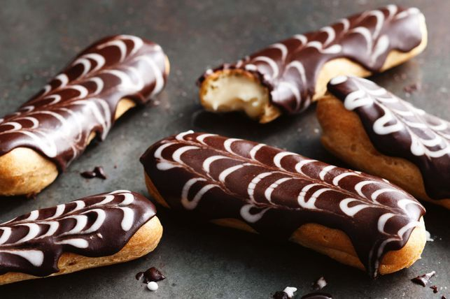
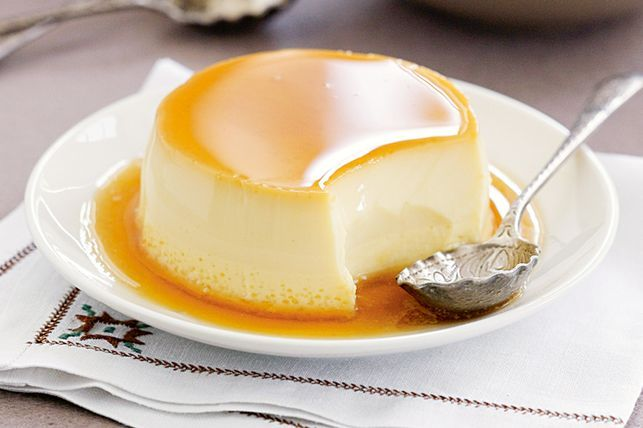

tartiflet is made of cheese and potato
The eclair originated during the nineteenth century in France where it was called “pain à la duchesse” until 1850."Eclair" Means lightening in.
Creme caramel is a stylish gluten-free dessert which everyone will love.